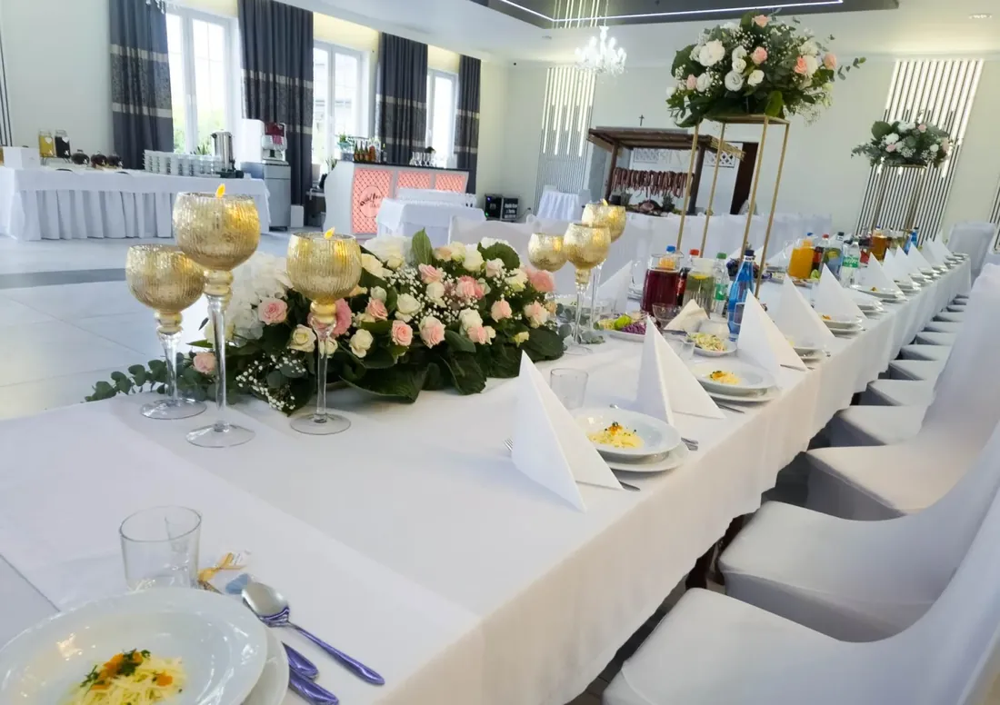
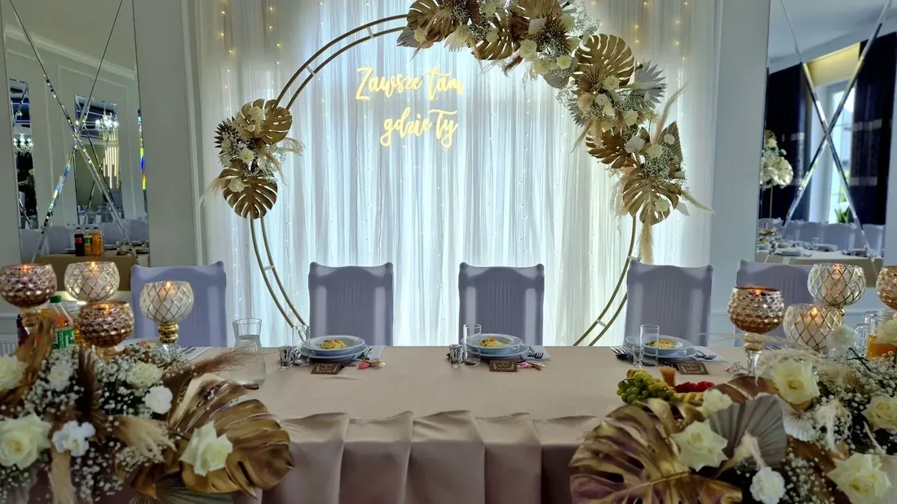
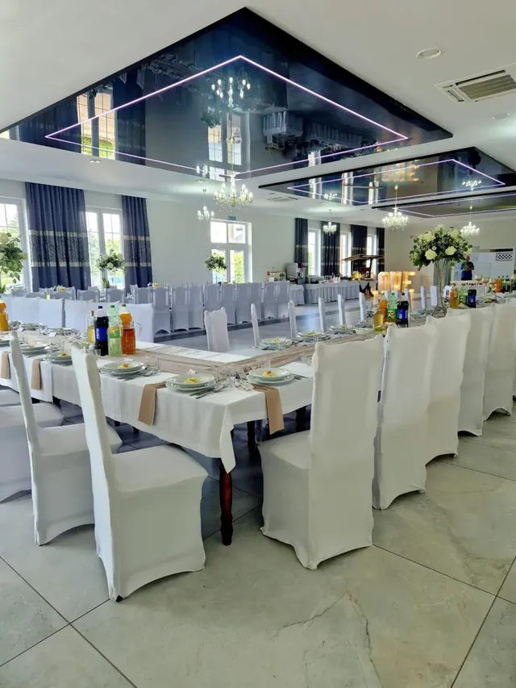
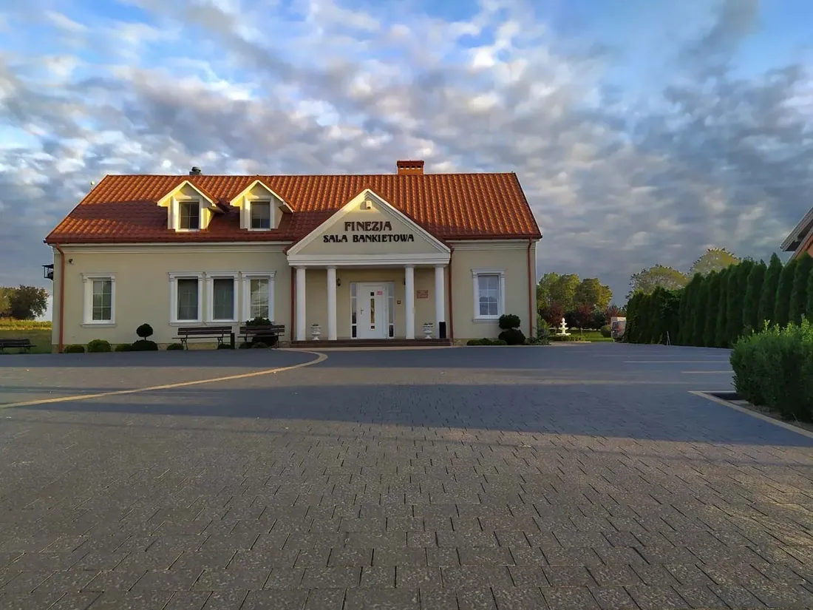

Sala weselna · Kaczki Średnie pod Turkiem
Wesele w Finezji
Od 2010 roku zorganizowaliśmy ponad 350 wesel. Wiemy, jak rozłożyć ciepłe kolacje, kiedy zaplanować tort, żeby nie kolidował z blokiem tanecznym, i gdzie ustawić fotografa, żeby pierwszy taniec wyszedł na zdjęciach.
W skrócie
Sala Finezja w liczbach
Wszystko, o co pary pytają przy pierwszym telefonie – w jednej tabeli.

| Doświadczenie | od 2010 roku, ponad 350 wesel |
|---|---|
| Liczba gości | od 60 do 160 osób przy stołach |
| Menu weselne 2026 | 330–380 zł za osobę |
| Alkohol | własny, bez opłaty korkowej |
| Rezerwacja | zaliczka 1000 zł blokuje datę |
| Kuchnia | własna, gotujemy na miejscu |
| Tort i desery | z własnej kuchni: na śmietanie, lodowe, monoporcje |
| Atrakcje na miejscu | własna fotobudka i kamera 360 |
| Zabawa | do rana – bez ograniczeń hałasu |
| Parking | bezpłatny, przy sali |
| Noclegi | ok. 48 miejsc w Kaczkach Średnich – szczegóły |
| Poprawiny | w sali lub w plenerze następnego dnia |
| Adres | Kaczki Średnie 10c, 62-700 Turek |
Dlaczego pary wybierają Finezję
Jedno wesele dziennie
W dniu Waszego ślubu sala, kuchnia i obsługa pracują tylko dla Was. Nie dzielicie parkingu, kuchni ani parkietu z inną imprezą.
Koordynacja w cenie
Od podpisania umowy macie jedną osobę do kontaktu. Pilnuje harmonogramu, ustaleń z DJ-em, florystą i fotografem oraz przebiegu przyjęcia. Obsługa jest na sali od przyjazdu pierwszych gości do wyjścia ostatnich.
Fotobudka, kamera 360 i tort – u nas
Zamiast trzech dodatkowych umów z podwykonawcami zamawiacie atrakcje i słodki stół w jednym miejscu. Fotobudka i kamera 360 stoją tak, żeby nie kolidowały z parkietem i stanowiskiem DJ-a.

Menu weselne
Co i jak podajemy
Menu ustalamy indywidualnie z każdą Parą Młodą. Standardowy przebieg kolacji weselnej w Finezji wygląda tak:
| Powitanie | chlebem i solą, toast – lampka szampana lub wina dla wszystkich gości |
| Obiad | serwowany do stołu: zupa i danie główne z kilkoma rodzajami mięs, rybą i opcją wegetariańską, z dodatkami i surówkami |
| Zimne przekąski | deski mięs, sery, sałatki, pasztety, ryby, marynaty – uzupełniane przez całą noc |
| Ciepłe kolacje | kilka dań w ciągu nocy, np. pieczone mięsa, strogonow, żurek, barszcz z pasztecikiem |
| Słodki stół | tort z naszej kuchni, ciasta domowe, desery, owoce, kawa i herbata bez ograniczeń |
| Napoje | woda, soki, napoje gazowane bez limitu; alkohol własny, bez korkowego |
Dodatki na życzenie: wiejski stół, drink bar z barmanem, fontanna czekoladowa, tort z fontannami iskier, ciężki dym na pierwszy taniec, animator dla dzieci.
Kalkulator
Ile kosztuje menu na Wasze wesele?
Liczymy według cennika sezonu 2026: od 330 do 380 zł za osobę. Różnica między wariantami to liczba ciepłych kolacji, rodzaj mięs i ryb oraz dodatki.
W każdym wariancie:
- obiad serwowany
- zimne przekąski całą noc
- ciepłe kolacje
- ciasta, kawa i herbata
- napoje bezalkoholowe
- obsługa kelnerska
- podstawowa dekoracja stołów
- koordynator wesela
Alkohol przywozicie własny – 0 zł korkowego. Wynik to orientacyjny koszt menu, dokładną ofertę przygotujemy po rozmowie.
Krok po kroku
Jak wygląda współpraca
Od pierwszej wizyty do rozliczenia – bez niespodzianek w umowie.
- Oglądacie salęUmawiamy spotkanie, także w weekend. Pokazujemy salę, kuchnię, plener, pokoje i parking.
- Rezerwujecie terminZaliczka 1000 zł blokuje datę. Umowa opisuje wszystko, co zawiera cena.
- Ustalamy menu i harmonogramZwykle 3–6 miesięcy przed ślubem. Degustacja wybranych dań.
- Potwierdzamy szczegółyDwa tygodnie przed weselem: liczba gości, rozsadzenie, diety, plan dnia z DJ-em i fotografem.
- Dzień weselaSala udekorowana i gotowa przed przyjazdem gości. Koordynator czuwa nad przebiegiem, Wy się bawicie.
- Poprawiny i rozliczenieOpcjonalne poprawiny na miejscu. Rozliczenie końcowe następnego dnia po weselu.


Partnerzy
Sprawdzeni wykonawcy, którzy znają salę
Grali, dekorowali i fotografowali w Finezji wielokrotnie – znają akustykę, wymiary sali i nasz harmonogram podawania dań. Terminy i ceny ustalacie bezpośrednio z nimi.
DJ-e weselni
| Wykonawca | Telefon |
|---|---|
| Jacek Kujawa | 888 548 650 |
| Klaudiusz | 537 718 851 |
| Maciej Dygas | 785 961 525 |
| Mariusz Kominiarczyk | 693 969 367 |
W sezonie soboty u dobrych DJ-ów rozchodzą się równie szybko jak terminy sal – warto zadzwonić zaraz po rezerwacji.
Floryści i dekoratorzy
| Wykonawca | Telefon |
|---|---|
| Zakręcona | 665 073 452 |
| Amor | 603 107 092 |
| Czarnek | 798 980 534 |
| Joanna | 691 074 619 |
| Balwit | 504 121 509 |
| Mateusz Adamiak | 783 298 205 |
Fotografowie
| Wykonawca | Telefon |
|---|---|
| Natalia Krauze | 693 233 022 |
| Darek Kowalski | 606 374 408 |
| Natalia Okoń | 505 947 401 |
| Kuźnia Kadru | 603 448 740 |
Pozostali
| Wykonawca | Telefon |
|---|---|
| Kraina Słodkości – cukiernia | 603 615 263 |
| Wesoły Duecik – animatorzy dla dzieci | 781 066 273 |
| Barman – drink bar | 697 217 044 |
Możecie też przyjechać z własną ekipą – DJ-em, zespołem, fotografem, dekoratorem czy barmanem. Nie pobieramy za to żadnych opłat.
Noclegi
Goście z daleka nie muszą wracać w nocy
W Kaczkach Średnich, kilka minut pieszo od sali, jest łącznie około 48 miejsc noclegowych. Pokoje w Finezji zwykle rezerwuje Para Młoda i najbliższa rodzina, pozostałych gości warto skierować do sąsiednich obiektów. Większe grupy nocują też w hotelach w Turku, 4 km od sali.
| Obiekt | Miejsca | Gdzie | Telefon |
|---|---|---|---|
| Sala Finezja | 8 miejsc | na miejscu | 665 188 619 |
| Bar Kaczki Średnie | 4 pokoje | za ścianą | 607 254 797 |
| Lawendowa Willa | 15 pokoi | ok. 700 m | 786 226 322 |
Przy potwierdzaniu szczegółów podpowiemy, jak rozdzielić miejsca. Na życzenie organizujemy też transport dla gości.

Pytania
Najczęściej pytacie o
Ilu gości pomieści sala weselna Finezja?
Od 60 do 160 osób przy stołach, z zachowaniem dużego parkietu. Przy mniejszych weselach salę aranżujemy tak, żeby nie wydawała się pusta.
Ile kosztuje wesele w Finezji?
Menu weselne w sezonie 2026 kosztuje od 330 do 380 zł za osobę. W cenie: obiad serwowany, zimne przekąski, ciepłe kolacje, słodki stół, napoje bezalkoholowe, obsługa kelnerska, podstawowa dekoracja stołów i koordynator. Dla wesela na 100 osób to orientacyjnie 33 000–38 000 zł za pełne menu.
Czy można przywieźć własny alkohol?
Tak – tak wygląda u nas standard. Nie pobieramy opłaty korkowej. Obsługa schłodzi alkohol i zadba o uzupełnianie na stołach.
Czy sala organizuje tylko jedno wesele dziennie?
Tak. W dniu Waszego ślubu cała sala, kuchnia i obsługa pracują tylko dla Was.
Do której można się bawić?
Do rana – sala jest oddalona od zabudowań, więc nie ma ograniczeń hałasu.
Jak wcześnie trzeba rezerwować termin?
Soboty w sezonie maj–wrzesień rozchodzą się zwykle 12–18 miesięcy wcześniej. Piątki i terminy poza sezonem są dostępne z krótszym wyprzedzeniem i często w niższej cenie.
Czy jest degustacja menu?
Tak, po rezerwacji terminu zapraszamy Parę Młodą na degustację wybranych dań.
Czy sala robi tort weselny?
Tak. Torty na śmietanie i lodowe przygotowujemy we własnej kuchni, w wybranym kształcie i dekoracji. Na słodki stół robimy także deserki i monoporcje. Jeśli wolicie cukiernię, polecamy Krainę Słodkości (603 615 263).
Czy w sali jest fotobudka i kamera 360?
Tak, oba urządzenia są nasze i obsługuje je nasza ekipa. Fotobudka drukuje zdjęcia na miejscu, kamera 360 nagrywa filmiki w zwolnionym tempie, które goście od razu dostają na telefon. Cenę podajemy przy ustalaniu menu.
Czy można przyjść z własnym DJ-em, fotografem lub dekoratorem?
Tak, bez żadnych opłat. Możecie też skorzystać z wykonawców, którzy regularnie pracują w Finezji – lista z telefonami jest wyżej na tej stronie.
Czy można zorganizować poprawiny?
Tak – w sali lub w plenerze następnego dnia, z osobnym menu.
Na ile przed weselem podajemy diety gości?
Liczbę gości z dietą wegetariańską, wegańską, bezglutenową lub bez laktozy wystarczy podać 14 dni przed weselem.
Opinie gości
Co piszą o nas po przyjęciu
Ocena „doskonała” na podstawie 300 opinii w Google. Wszystkie opinie
„Organizowałam tu wesele syna, ponieważ urzekł mnie klimat tego miejsca i fantastyczna obsługa. Największym potwierdzeniem doskonałego wyboru były zachwyty gości nad podanymi daniami.”
„Wesele w Finezji było dla nas niezapomnianym przeżyciem. Sala była pięknie oświetlona, a aranżacje kwiatowe dodawały uroku całemu miejscu. Jedzenie było po prostu przepyszne.”
„Robiliśmy u Państwa niejedną imprezę i jak zawsze jesteśmy bardzo zadowoleni. Jedzenie przepyszne, dużo i te wasze devolaje. Z cateringu również jesteśmy zadowoleni – przede wszystkim ciepły.”
Rezerwacje i wizyty
Umówcie się na obejrzenie sali
Pokażemy salę, plener, kuchnię i pokoje, a przy okazji opowiemy, czego nauczyło nas ponad 350 wesel.
| Telefon | 665 188 619 · 601 637 397 |
|---|---|
| biuro@finezja.org | |
| Adres | Kaczki Średnie 10c, 62-700 Turek |